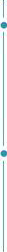

僵小鱼
求职意向：财务会、审计员- 民族 : 汉族
- 生日 : 1990.08.18
- 籍贯 : 广东深圳
- 现居 : 北京
 政治面貌 : 中共党员
政治面貌 : 中共党员- 电话 : 15031000000
- 邮箱 : 123456@qq.com
荣誉奖励
- 获得校一等奖奖学金
- 全国计算机等级三级证书
- 全国英语六级
- 获得全国会计资格资质
- 获得校一等奖奖学金
教育背景
2014.09-2016.06 清华大学 新闻传播学 硕士研究生
- 2616年获得研究生第一学年特等奖学金
- 2016年11月代表北京大学新闻系参加首页北京地区新闻院系研究生论坛
- 2016年12月获评研究生毕业论文开题答辩优秀报告人
- 2016年发表北大中文核心期刊2篇
工作经验
2014.5-2015.5 传媒艺术研究 《传媒艺术先锋》 执行主编
- 2616年获得研究生第一学年特等奖学金
- 2016年11月代表北京大学新闻系参加首页北京地区新闻院系
- 2016年12月获评研究生毕业论文开题答辩优秀报告人
- 2016年发表北大中文核心期刊2篇
- 2016年发表北大中文核心期刊2篇
2014.12-2016.1 马鞍山第一传媒高校 考前冲刺班班主任
- 2616年获得研究生第一学年特等奖学金
- 2016年11月代表北京大学新闻系参加首页北京地区新闻院系
- 2016年12月获评研究生毕业论文开题答辩优秀报告人
- 2016年发表北大中文核心期刊2篇
- 2016年发表北大中文核心期刊2篇
专业技能
语言技能 :
英语CET6、德语专业技能 :
熟悉web、ios和android开发、精通数据库、C++及Java办公技能 :
熟练使用Office办公软件、AxureRP、Visio软件技能 :
熟悉web、ios和Android开发
自我评价
我为人友善、真減做事细致、专注，有很强的责任心，学习能力与适应能 力强，喜欢与他人交谈热爱生活性格标签是认真i有着沉静内效，善于思 考和研究的特质,作为本顿皆为新闻学专业的文科生。与文字为伴多年,交 字功底扎实,文字编辑把关。策划能力强。